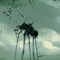

40 jours — 32
Fichiers conservés de la collection Metaflash.
Ouvrir l’imageFichiers conservés
40jours/32.jpg

Informations du fichier
- Nom conservé
- ab0de057b3e30f90cd7a3e8f0554210cb69cc75ae16cd4c375c54282567d3172.jpg
- Taille
- 2,608 octets
- SHA-256
- ab0de057b3e30f90cd7a3e8f0554210cb69cc75ae16cd4c375c54282567d3172
Provenance dans la sauvegarde Metaflash :
- 40jours/32.jpg (ab0de057b3e30f90cd7a3e8f0554210cb69cc75ae16cd4c375c54282567d3172)
40jours/32c.jpg

Informations du fichier
- Nom conservé
- c3525e5a5ab3141f4bafa28a6b3789d7e57528228b2a5572c5bd28c57df943a6.jpg
- Taille
- 2,610 octets
- SHA-256
- c3525e5a5ab3141f4bafa28a6b3789d7e57528228b2a5572c5bd28c57df943a6
Provenance dans la sauvegarde Metaflash :
- 40jours/32c.jpg (c3525e5a5ab3141f4bafa28a6b3789d7e57528228b2a5572c5bd28c57df943a6)
40jours/32d.jpg


Informations du fichier
- Nom conservé
- 7edb360ae0e589ab123a3df396eb8c1d01bf508bd3d2e58bc1bcc138668e9992.jpg
- Taille
- 2,702 octets
- SHA-256
- 7edb360ae0e589ab123a3df396eb8c1d01bf508bd3d2e58bc1bcc138668e9992
Provenance dans la sauvegarde Metaflash :
- 40jours/32d.jpg (7edb360ae0e589ab123a3df396eb8c1d01bf508bd3d2e58bc1bcc138668e9992)